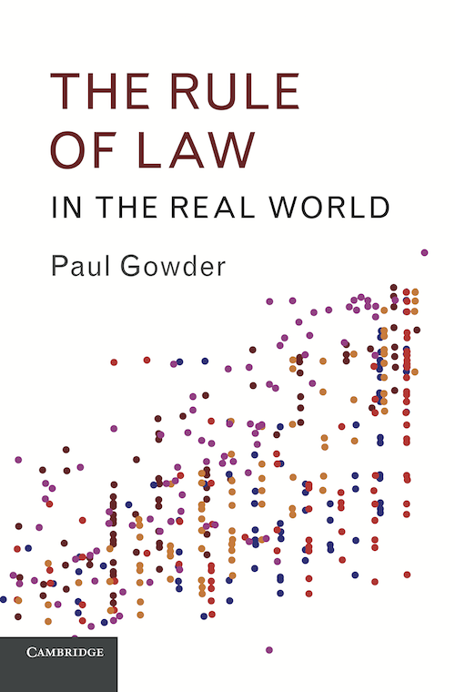

"Paul Gowder's masterpiece articulates a new vision of the rule of the law that protects the disempowered and marginalized, and that demands that the nation-state rationalize its coercive power. He relentlessly attacks irrational social, economic and political hierarchies, particularly those that give continued vitality to racial inequality in the US today. As such his rule of law is firmly rooted in notions of human rights, and looks askance at soaring inequality in the US. This rule of law protects real people in need of real protection, rather than serving as just another rhetorical instrument in the arsenal of the wealthy and powerful. It also serves, incidentally, as a bedrock foundation for economic development and a tool that can help avoid financial disruptions like that seen in 2008."
Steven A. Ramirez, author of Lawless Capitalism
"The Rule of Law in the Real World explores and connects legal philosophy, conceptual and normative, as well as historical interpretation and social sciences, policy analysis, and advocacy. It makes insightful and distinctive contributions in each domain. Moreover, it brings them into mutually informing connection. Standard inmates of the disciplines rarely make (or even imagine) such connections, even when their subject - the rule of law - bears the same name. Gowder's achievement is thus far more than a sum of its exemplary parts. It is an all too rare combination of theoretical cogency, normative sophistication and ambition, empirical attentiveness, and real world engagement and pay-off."
Martin Krygier, Gordon Samuels Professor of Law and Social Theory, and Co-Director, Network for Interdisciplinary Studies of Law, University of New South Wales
The Rule of Law in the Real World gives a comprehensive new theory of the political and legal ideal known as "the rule of law": what it means (the coordinated collective control of power), why it matters (it constitutes a morally important kind of social equality), and how these properties should be taken into account in social scientific attempts to measure it as well as policy efforts to promote it.
This highly interdisciplinary work begins with analytic political philosophy, developing a distinctively egalitarian account of the rule of law and its moral value. It then moves to history and political science, showing both that states with more egalitarian legal systems are likely to do better at sustaining the rule of law than states with inegalitarian systems, and that the self-understanding of participants in political conflict in real-world historical rule of law states---including democratic Athens and seventeenth-century England---understood the rule of law in egalitarian terms.
It then turns to the development enterprise. The book offers a critique of existing empirical measurement strategies for the rule of law as well as an alternative rule of law measure. The new measure is rooted in the philosophical basis of the concept, behaves much as existing theoretical claims about the rule of law would predict (e.g., is highly correlated with economic development: see plots below), and is more readily interpretable than existing measures.
In addition, the book explains how the egalitarian account of the rule of law can support interventions in the debate among rule of law development professionals and scholars between advocates of "bottom-up" and "top-down" development strategies. Finally, The Rule of Law in the Real World calls for the developed states to pay closer attention to promoting and maintaing the rule of law in their own political communities; in particular, it argues that policing in the U.S.---especially with respect to systematic discrimination against African-Americans---is a dire failure of the rule of law.
Paul Gowder is an associate professor of law and of political science (by courtesy) at the University of Iowa researching constitutional law, ethics, normative and conceptual jurisprudence, political theory, and quantitative legal studies. His areas of speciality (other than the rule of law) include Classical Athenian law, contemporary liberal political philosophy, game theory, predictive modeling, and computational law. He holds a J.D. from Harvard University and a Ph.D. in political science from Stanford University. Before joining academia, he worked as a public interest litigator practicing poverty and civil rights law in Oregon and Virginia.
| Description | Download |
|---|---|
| Dataset: Rule of law scores with correlates per charts above | rol-scores.csv |
| Dataset: Simulation data reported in chapter eight (equal law and stability) | simul_ds.csv (31.6mb) |
| Code: Simulation code in R (computationally intensive) | simulation.R |
| Code: Plots in chapter nine of the book, plus displayed on this website, in R | plots.R |
| Table: Text of survey items used to construct rule of law measure, from World Justice Project 2012 data (actual data per state available only from WJP) | WJPitems.pdf |
| New analysis: A comparison between the rule of law scores from the book and the first principal component of the World Justice Project's eight-factor measure | rlrw-wjp.html |
| Presentation: A slideshow prepared for a 35-minute presentation on The Rule of Law in the Real World (reformatted for the web) | slides/ |
| Description | Book Reference | Link |
|---|---|---|
| Paper offering a preliminary version of the core normative/conceptual account of the rule of law | Preliminary version of claims developed in chapters one and two | The Rule of Law and Equality |
| Paper offering a preliminary version of the account of general law and social equality | Preliminary version of claims developed in chapters two and three | Equal Law in an Unequal World |
| Paper offering a preliminary version of the account of the rule of law in Classical Athens | Preliminary version of claims developed in chapters five and six | Democracy, Solidarity and the Rule of Law: Lessons from Athens |
| Paper describing some of the methodological presuppositions of the theory of the rule of law | Defends some of the base-level philosophical claims that ground the book as a whole | Institutional Values, or How to Say What Democracy is |
| Spin-off paper about how the egalitarian theory of the rule of law can shed light on political corruption | Referenced in chapter one | Institutional Corruption and the Rule of Law |
| Brief commentary further discussing the relationship between the rule of law and democracy | Referenced in chapter eight | The Rule of Law Against Sovereign Immunity in a Democratic State |
| Analysis of Plato's Crito in terms of the strength topos of chapter five | Referenced in chapter five | What the Laws Demand of Socrates---and of Us |
External Data: Rule of Law and Correlates Links referenced in the book
| Description | Book Reference | Link |
|---|---|---|
| World Justice Project Rule of Law Surveys and Results | 2012 survey is source for data in chapter nine and this website | The World Justice Project |
| Nardulli, Peyton & Bajjalieh, Conceptualizing and Measuring Rule of Law Constructs | Alternative unidimensional rule of law measure, discussed in chapter nine | Nardulli, Peyton & Bajjalieh (2013) |
| United Nations Rule of Law Indicators: Implementation Guide and Project Tools | Framework for alternative rule of law measure, discussed in chapter nine | U.N. Rule of Law Guide |
| World Bank: Worldwide Governance Indicators | Alternative rule of law measure, discussed in introduction and chapter nine | Worldwide Governance Indicators |
| Freedom House | Supplies electoral process, political pluralism, and personal autonomy measures used in validation of chapter nine rule of law indicators | Freedom House |
| Polity Project Dataset | Alternative source of measures of characteristics related to liberal democracy | Polity IV |
| Heritage Foundation Index of Economic Freedom | Source of property rights measure used in validation of rule of law measure in chapter nine | Heritage |
| Transparency International | Additional data on corruption, relevant to rule of law measurement (considered, but ultimately not used in chapter nine measure) | Transparency International: Research |
| Bertelsmann Stiftung’s Transformation Index | Alternative measures of rule of law and related concepts. | BTI Index |
| Comparative Constitutions Project | Additional data on de jure content of constitutions across the world (considered, but ultimately not used in chapter nine measure). | CCP Data |
| Description | Book Reference | Link |
|---|---|---|
| World Bank: Rule of Law Index Specification | Introduction, chapter nine | WGI: Rule of Law (pdf) |
| BBC World News: Why does Singapore Top So Many Tables? | Chapter four | BBC on Singapore |
| Huffington Post: Saudi Arabia Partying: Elite, Boozy And Secret | Chapter four | Huffpo on Saudi Arabia |
| Perseus Digital Library | Source for a number of English translations referenced in chapters five and six | Perseus |
| Ta-Nehisi Coates, "Nonviolence as Compliance," The Atlantic, 4/27/15 | Chapter eight | Coates, 2015 |
| Hasso Plattner Institute of Design, Stanford University, "Use Our Methods" | Chapter nine | D-School Methods |
| Parsons Design for Social Innovation and Sustainability Lab at the New School | Chapter nine | DESIS Lab |
| Danny Vinik, “An 18-Year-Old Baltimore Rioter Faces a Higher Bail Than the Cop Accused of Murdering Freddie Gray,” New Republic, 5/2/2015 | Conclusion | Vinik NRO |
| Frank Stoltze, “’Rough Rides’ in Baltimore police cars are ‘Screen Tests’ in LA,” K.P.C.C. radio, 5/2/2015 | Conclusion | Stoltze, "Screen Tests" |
| Bill Keller, “David Simon on Baltimore’s Anguish,” The Marshall Project, 4/29/2015 | Conclusion | Keller/Simon |
| Larry Celona and Bob Fredericks, “City Housing Puts Workers in Bright Vests in Fear of NYPD Shootings,” New York Post, 5/25/2015 | Conclusion | Celona/Fredericks |
| Timothy Williams, “San Francisco Police Officers to Be Dismissed Over Racist Texts,” New York Times, 4/3/2015 | Conclusion | NYT: Racist Texts |
| Aleksander Chan, “The Horrible, Bigoted Texts Traded Among San Francisco Police Officers,” Gawker, 3/3/2015 | Conclusion | Gawker: Racist Texts |
| Radley Balko, “How Municipalities in St. Louis County, Mo., Profit from Poverty,” The Washington Post, 9/3/2014 | Conclusion | Balko on Ferguson |
| Court Record Reflecting St. Louis County Arrest Warrant Statistics | Conclusion | MO Table 95 |
| Spencer Ackerman, “The Disappeared: Chicago Police Detain Americans at Abuse-Laden ‘Black Site’,” The Guardian, 2/24/2015 | Conclusion | Guardian on Chicago Black Site |
Print copies appear to be most accessible directly from Cambridge; Amazon has been saying strange and untrue things about their availability. Also, the code GOWDER16 will get you a 20% discount direct from Cambridge until July 1, 2016. (Download promotional flier.) Amazon does, however, have a Kindle e-book.
the rule of law in the real world, by paul gowder | book published by cambridge university press, 2016 | website by author
Tweet